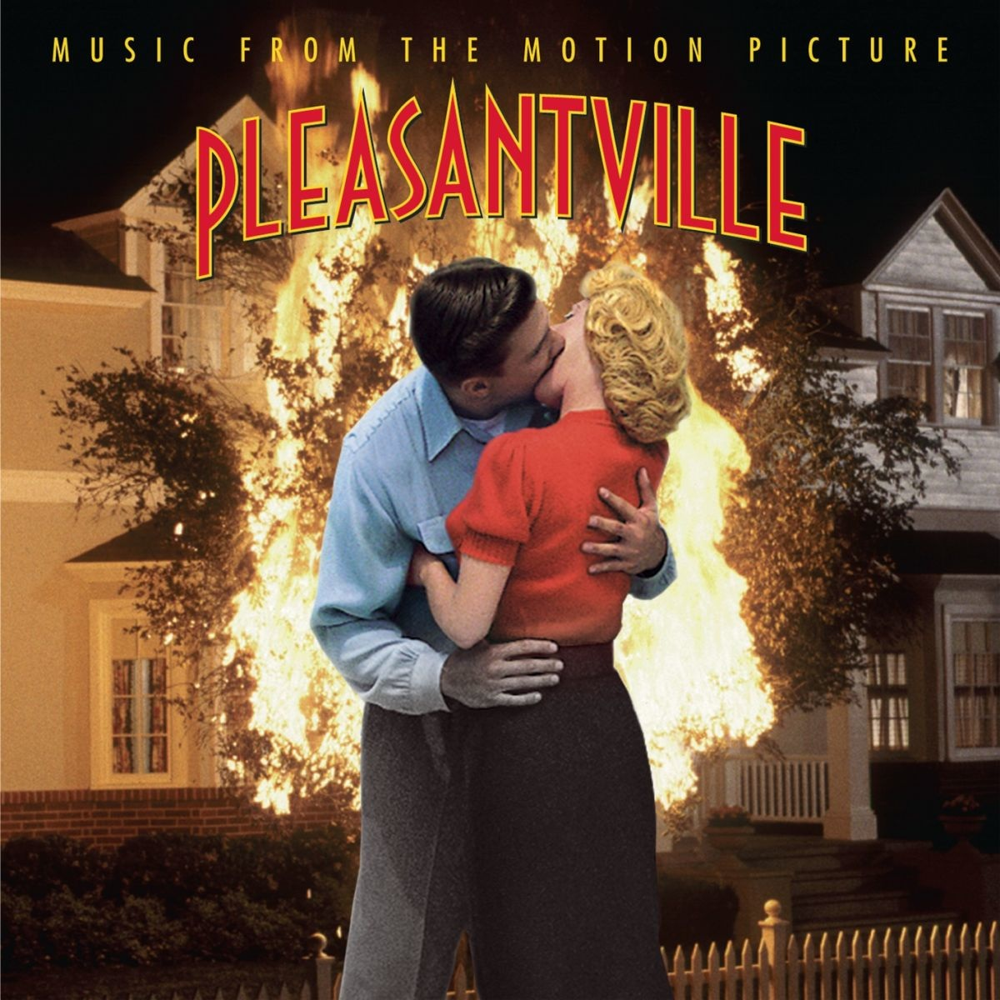
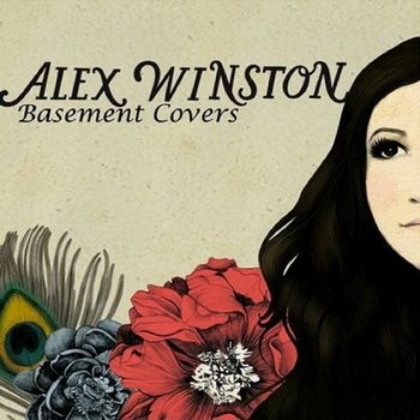
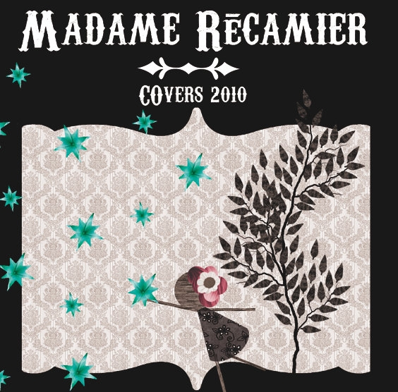
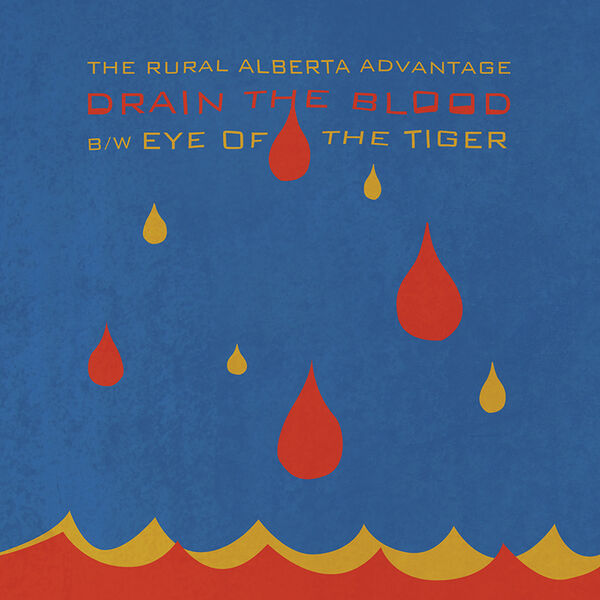
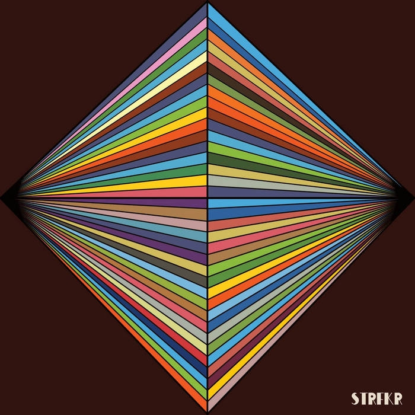
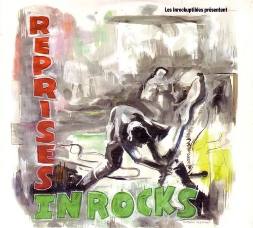
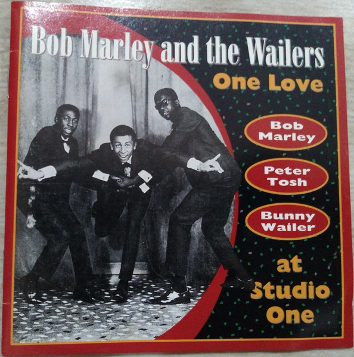
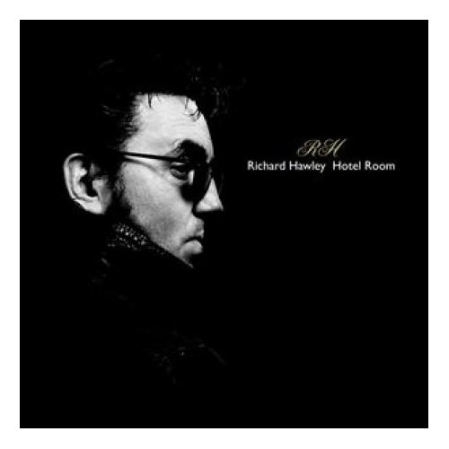
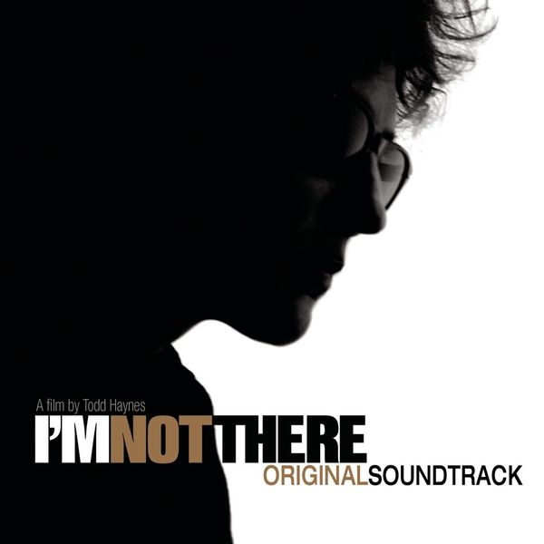
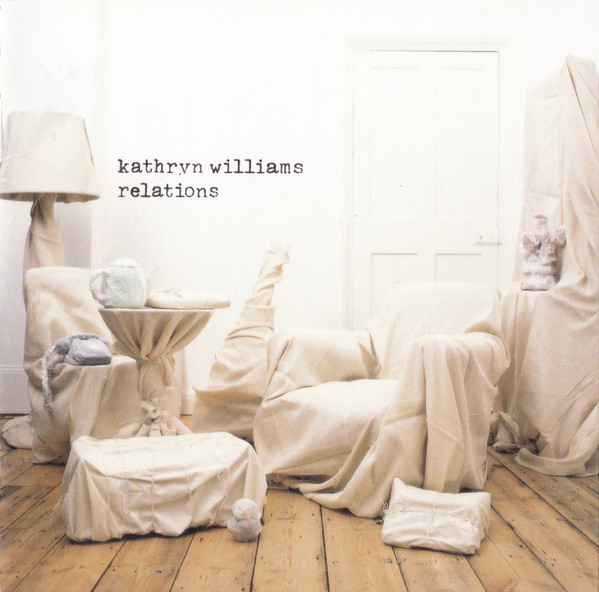

01Across the Universe
Fiona Apple – Pleasantville -Music From The Motion Picture (1998)
orig. The Beatles
 02
02
Ashes to Ashes
Warpaint – Ashes to Ashes (2010)
orig. David Bowie

03The Cave
Alex Winston – The Basement Covers (2010)
orig. Mumford & Sons
 04
04
China Girl
Anna Ternheim – Shoreline (2005)
orig. Iggy Pop

05Es Tiempo de Fingir
Madame Recamier – Covers 2010 (2010)
orig. MGMT

06Eye Of The Tiger
The Rural Alberta Advantage – Drain The Blood (2010)
orig. Survivor

07Girls Just Wanna Have Fun
Starfucker – Buffetlibre Rewind 2 (2009)
orig. Cindy Lauper
 08
08
Heroes
MIA – Hieb & Stichfest (2002)
orig. David Bowie
 09
09
I Will Survive
Cake – Fashion Nugget (2001)
orig. Gloria Gaynor

10It's Over
My Brightest Diamond – Les Inrockuptibles présentent Reprises Inrocks - Vol. 01
orig. Roy Orbison

11Like A Rolling Stone
Bob Marley & The Wailers – One Love At Studio One (1965)
orig. Bob Dylan
 12
12
Mr. Tambourine Man
The Byrds – The Byrds Play Dylan (2008)
orig. Bob Dylan
 13
13
Pregnant
Architecture – Internet Single
orig. R. Kelly
 14
14
Ruby, Don't Take Your Love To Town
Cake – 99 Best Covers Ever (IV) - The Killing Moon - Extra Value (2004)
orig. Waylon Jennings

15Some Candy Talking
Richard Hawley – Hotel Room 45 (2006)
orig. Jesus And Mary Chain

16Stuck Inside Of Mobile With The Memphis Blues Again
Cat Power – I'm Not There (Music From The Motion Picture) (2007)
orig. Bob Dylan
17
Sunny
Montefiori Cocktail – Raccolta Nº2 (2002)
orig. Bobby Hebb

18Thirteen
Kathryn Williams – Relations (2004)
orig. Big Star
 19
19
This Charming Man
MENSCH – Dance and Die - EP (2010)
orig. The Smiths
 20
20
Who Doesn't Love (Sugar, Sugar) (orig. The Archies)
Sinn Sisamouth – Cambodian Rocks Volumes 1- 4 (Remastered) (2016)
21
Why Don't They Let Us Fall In Love
The Morning Benders – Daytrotter Session
orig. The Ronettes
 22
22
Young Americans
Danny Michel – Loving The Alien: Danny Michel Sings The Songs Of David Bowie (2004)
orig. David Bowie